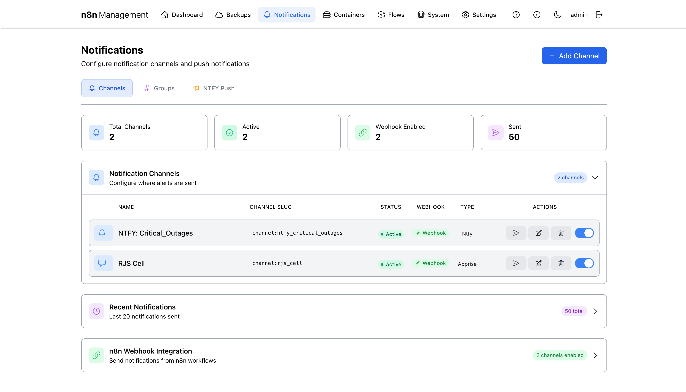
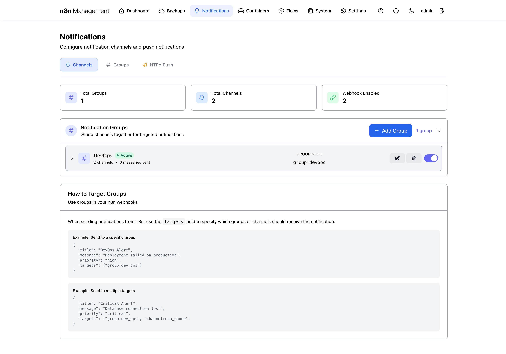
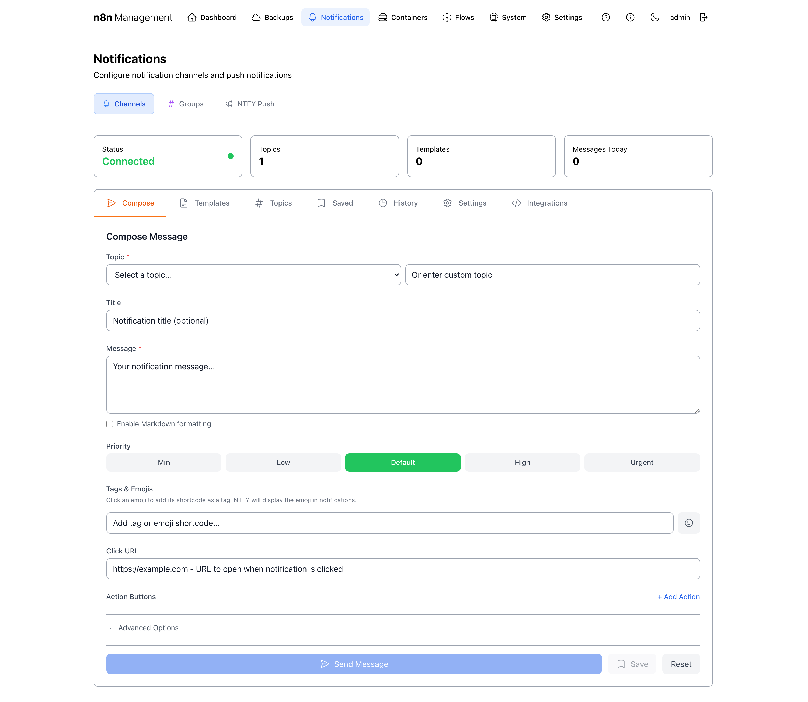
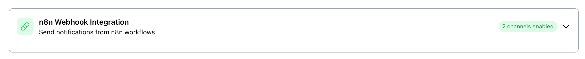

Notifications
Notifications is the routing layer for everything that wants to alert a human: backup success/failure, container health changes, manual messages from your n8n workflows, and direct push messages via NTFY. The page has three top-level tabs — Channels (where alerts go), Groups (named bundles of channels), and NTFY Push (a self-hosted push service with its own message composer).
Overview
The Notifications page header has a title, a description, and a single Add Channel button (always visible regardless of which tab is active, since adding a channel is the most common action). Below the header sit three tabs.

Channels tab
The Channels tab is the default view. A "channel" is a single delivery destination — a Slack webhook, a Discord webhook, an Apprise URL, an NTFY topic, an email address. Each channel is independent; channels can be combined into Groups for targeted delivery.
Summary cards
| Card | Counts |
|---|---|
| Total Channels | Every channel that exists, regardless of state. |
| Active | Channels with the toggle ON. Inactive channels stay in the list but never receive notifications. |
| Webhook Enabled | Channels that accept routing from the global n8n Webhook Integration endpoint (see below). |
| Sent | Cumulative count of notifications sent across all channels. |
The channel list
The Notification Channels list shows each channel as a row with six columns: NAME, CHANNEL SLUG, STATUS, WEBHOOK, TYPE, ACTIONS. Each row's ACTIONS column has four icon buttons + a toggle:
| Action | Effect |
|---|---|
| ▶ Test send | Sends a synthetic notification to that channel's destination right now. |
| ✏ Edit | Opens an edit dialog for the channel's config. |
| 🗑 Delete | Removes the channel and any rules that target it. |
| Toggle | Flips Active / Inactive without deleting. |
Groups tab
Groups bundle channels under a single name so notifications can target many destinations at once. A group has a name, a slug (group:<name>), and a list of member channels.

Targeting groups from n8n
The Groups tab includes an explainer block with example payloads showing how to address a group from an n8n workflow. The pattern is:
{
"title": "DevOps Alert",
"message": "Deployment failed on prod",
"targets": ["group:devops"]
}You can mix groups, individual channels, and the special "all" target in the same array — see n8n Webhook Integration.
NTFY Push tab
NTFY is a self-hosted push notification service (the n8n_ntfy container in the stack). The NTFY Push tab is a complete control surface for it — connection status at the top, then seven sub-tabs for every aspect of message lifecycle: Compose, Topics, Templates, Saved, History, Settings, Integrations.

The seven sub-tabs
| Sub-tab | Purpose |
|---|---|
| Compose | Full message composer for sending an ad-hoc NTFY message right now (default view). Fields: Topic, Title, Message (with Markdown toggle), Priority (Min/Low/Default/High/Urgent), Tags & Emojis, Click URL, Action Buttons, Advanced Options. |
| Topics | Lists your NTFY topics. Topics are namespaces — subscribers tune in to specific topics. |
| Templates | Reusable message templates with placeholders. Useful when you send the same shape of message repeatedly with different field values. |
| Saved | Messages you've saved from the Compose tab. Click any saved message to load it back into Compose for sending again. |
| History | Every NTFY message that has been sent — useful for audit and debugging. |
| Settings | NTFY server configuration: connection URL, base URL, authentication settings. |
| Integrations | Code-snippet examples for integrating NTFY with external systems — curl one-liners, Python, JavaScript, n8n HTTP Request node, etc. |
Recent Notifications
Below the channels tab content sits a Recent Notifications card showing the most recent 20 messages sent across all channels. Collapsed by default; click to expand.
Each entry shows: title, channel that sent it, timestamp, delivery status. Common entries on a healthy stack include nightly Backup Success and Backup Verification Passed events.
n8n Webhook Integration
The bottom card on the Channels tab is the most powerful: a single webhook endpoint that lets your n8n workflows push notifications through this entire system without re-implementing each channel's API. Click to expand.

The webhook contract
Send a JSON POST to the displayed URL with these fields:
{
"title": "Alert Title",
"message": "Your notification message",
"priority": "normal",
"targets": ["all"]
}Authenticating
The webhook requires the API Key shown in the panel as the X-API-Key header. The recommended n8n setup:
- In n8n, create a Header Auth credential. Name it something like "n8n Mgmt Webhook." Header name:
X-API-Key. Header value: paste from this panel. - In your workflow, add an HTTP Request node. Method:
POST. URL: paste from this panel. Authentication: Generic Credential Type → Header Auth → your saved credential. - Body content type: JSON. Body: the shape shown above.
Targets
| Target value | Effect |
|---|---|
"all" | Sends to every channel that has Webhook routing enabled. |
"channel:<slug>" | Sends only to the named channel. Slug is the value shown in the channel row's CHANNEL SLUG column. |
"group:<slug>" | Sends to every channel in the named group. |
| Multiple values | Combine — e.g., ["channel:devops_slack", "group:oncall"]. |